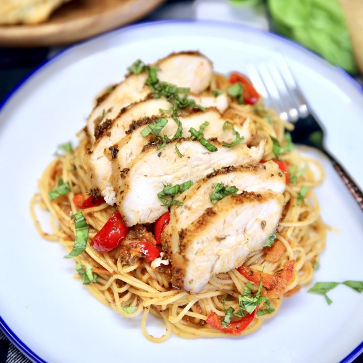

Chicken spaghetti

Chicken spaghetti ready to be eaten!
If you are looking for a way to jazz up your next spaghetti dinner, OR possibly looking for a creative way to use up some leftover or rotisserie chicken, you have come to the right place.
This creamy, cheesy, chicken spaghetti is so incredibly flavorful, make-ahead and freezer-friendly, and your family will love it.
Take a look at how to make it, read through my pro tips, storage information, and more below.
- 1 (12 ounce) package angel hair pasta
- 2 cups chopped cooked chicken breast
- 1 (10.75 ounce) can condensed cream of chicken soup
- 1 (10 ounce) can diced tomatoes with green chile peppers
- ¾ (8 ounce) package processed cheese, cubed
- salt and ground pepper
- ½ (4 ounce) jar sliced mushrooms, drained
How to make chicken spaghetti easily!
- Bring a large pot of lightly salted water to a boil. Drain pasta and return it to the pot
- Stirring occasionally, until tender yet firm to the bite, 4 to 5 minutes
- Cook angel hair pasta in the boiling water
- Add chopped chicken, condensed soup, diced tomatoes with chile peppers, processed cheese, mushrooms, salt, and pepper
- Cook and stir over low heat until cheese is melted and mixture is heated through, about 5 minutes